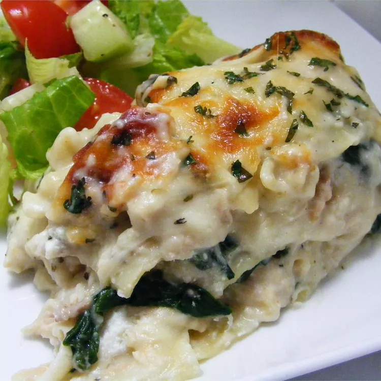

Chicken Lasagna

The ingredients
This is the best lasagna you ever going to make/eat!
To make this wonderful recipe you need the following ingredients:
- Noodles: You'll need lasagna noodles.
- Butter: Cook the onion and garlic in butter.
- Vegetables: You'll need an onion and two packages of frozen spinach.
- Garlic: Cook a clove of minced garlic with the onion for a more intense flavor.
- Flour: All purpose flpur thickens the sauce.
- Broth: Use store-bought chicken broth or make your own at home.
- Milk: Whole milk is best for this decadent white sauce.
- Seasonings and herbs: This chicken lasagna is seasond with salt, dried basil, dried oregano, black pepper and fresh parsley.
- Cheeses: You'll need mozzarella, Parmesan and ricotta cheeses.
- Chicken: This white chicken lasagna is a great use for leftover chicken!
Steps to follow
- Boil and drain the lasagna noodles.
- Cook the onion and garlic in butter, then whisk in the flour.
Add the broth, milk, and salt.
- Add some of the mozzarella and Parmesan. Season with basil, oregano, and pepper. Set aside.
- Assemble the lasagna according to the recipe.
- Bale in the preheated oven.